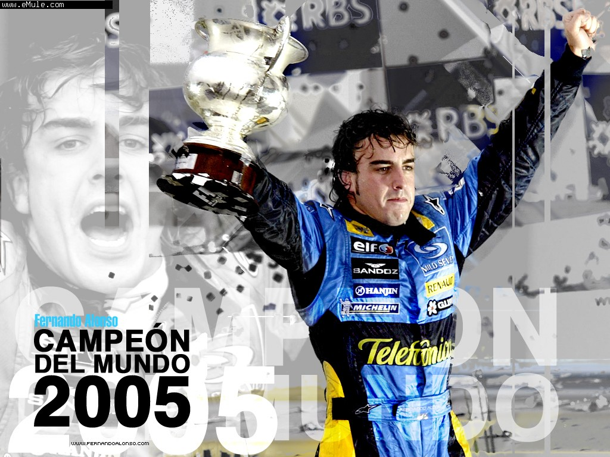

Fernando Alonso Díaz nació en Oviedo, Asturias, el 29 de julio de 1981. Tuvo su primer contacto con el mundo del motor a los tres años, al subirse a un kart fabricado por su padre que originalmente estaba pensando para su hermana mayor.
Alonso ganó el Campeonato Mundial de Pilotos de Fórmula 1 en 2005. Su carrera ha estado marcada por logros notables y una habilidad excepcional al volante.
En su carrera ha competido para los equipos Minardi, Renault, McLaren, Ferrari, Alpine y Aston Martin en Fórmula 1, siendo la escudería de Maranello su equipo desde 2010 hasta 2014, donde logró sus tres subcampeonatos y un Grand Chelem. Se marchó de Ferrari y en 2015 volvió a McLaren-Honda hasta la retirada de 2018. Tras dos años fuera de la categoría, en 2021 volvió con la escudería Alpine, parte de la familia Renault, con la que ganó sus dos campeonatos. Desde 2023 forma parte del equipo Aston Martin sustituyendo a Sebastian Vettel.
| Año | Pos. | Equipo | Puntos |
|---|---|---|---|
| 2023 | 4 | Aston Martin | 198 |
| 2022 | 9 | Alpine | 81 |
| 2021 | 10 | Alpine | 81 |
| 2018 | 11 | McLaren | 50 |
| 2017 | 15 | McLaren | 17 |
| 2016 | 10 | McLaren | 54 |
| 2015 | 17 | McLaren | 11 |
| 2014 | 6 | Ferrari | 161 |
| 2013 | 2 | Ferrari | 242 |
| 2012 | 2 | Ferrari | 278 |
| 2011 | 4 | Ferrari | 257 |
| 2010 | 2 | Ferrari | 252 |
| 2009 | 9 | Renault | 26 |
| 2008 | 5 | Renault | 61 |
| 2007 | 3 | McLaren | 109 |
| 2006 | 1 | Renault | 134 |
| 2005 | 1 | Renault | 133 |
| 2004 | 4 | Renault | 59 |
| 2003 | 6 | Renault | 55 |
| 2001 | 23 | Minardi | 0 |